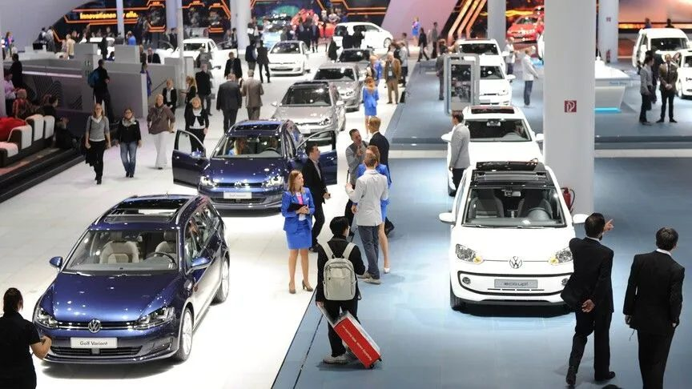

Elektroauta mají v EU 23,4 % nových registrací, benzínových aut ubylo o 20,1 %
Registrace nových osobních aut v EU v říjnu meziročně vzrostly o 2,6 % na 916 070 kusů, oznámila 24. listopadu asociace ACEA. Za leden až říjen trh roste o 5,4 % a elektroauta drží 23,4 % podílu.

Říjen byl devátým měsícem růstu v řadě. Tempo ale zpomalilo, v září trh rostl o 9,3 %. Rostly všechny čtyři největší trhy EU: Francie o 7 %, Itálie o 5 %, Španělsko o 1,8 % a Německo o 1,7 %. V širším srovnání EU, Velké Británie a dalších trhů vzrostly registrace o 3,4 % na 1,28 milionu aut. Tesla prodala 12 116 aut, téměř o 77 % víc. BMW rostlo o 4,6 % na 86 043 aut, Stellantis, Volkswagen a Renault meziročně klesly.
Za leden až říjen se v EU registrovalo 2 211 071 nových elektroaut. Jejich podíl stoupl na 23,4 % ze 16,4 % před rokem. Ve Francii jich přibylo o 79,4 %, v Německu o 60,7 %, v Dánsku o 41 % a v Belgii o 16,7 %. Nejoblíbenější zůstávají hybridy s 3 407 062 auty a podílem 36 %. Plug-in hybridů bylo 961 959, jejich podíl stoupl na 10,2 % z 9,2 %.
Benzínových aut se registrovalo 1 962 607, o 20,1 % méně. Jejich podíl klesl na 20,8 % z 27,4 %. Nejvíc ve Francii (o 36,9 %), dále v Německu (o 24,5 %), Španělsku (o 19,3 %) a Itálii (o 16,6 %). Diesely klesly o 20,6 % a mají 6,9 % trhu proti 9,2 % před rokem. Růst elektrifikovaných aut podle ACEA táhnou nákupní pobídky a širší nabídka modelů.
Zdroje
Anadolu AjansıEU car registrations rise 2.6% in October as electric vehicle demand holds firmACEA - European Automobile Manufacturers' AssociationNew car registrations: +5.4% in October 2026 year-to-date; battery-electric 23.4% market share - ACEAHürriyet Daily NewsEU car registrations rise in October as EV demand holds firmInvesting.comEurope new car registrations rise 3.4% in Oct as EV, hybrids maintain lead- ACEAET AutoEurope's October car sales rise 3.4% as EV registrations surge, Chinese brands gain groundShrnutí redakce FlipujKáru podle uvedených zdrojů.